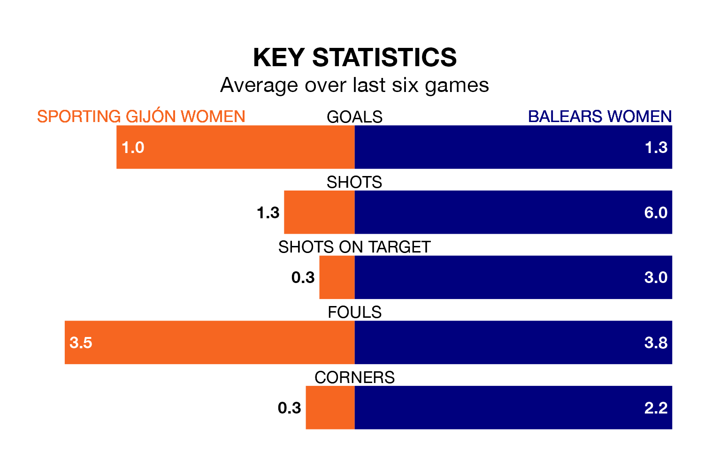

Two of the Segunda Federación Femenina's top sides face each other in Sunday's early kick-off, when zero-placed Sporting Gijón Women host third-placed Balears Women.
Sporting have picked up four wins and four draws from 21 games so far this season, and sit 29 points below the visitors going into the 11am match.
Balears, meanwhile, have won 14 and drawn three, picking up 45 points.
With 41 goals in 21 games so far this season, Balears are the league's joint-highest scorers with 2.0 goals per game. And they are conceding fewer than average, letting in 21 goals at a rate of 1.0 per game.
Sporting, meanwhile, are below average scorers, with 1.1 goals per game, compared to a league average of 1.3. They have conceded 1.7 goals per game.
The home side are in bad form in the Segunda Federación Femenina, with one win and five losses from their last six games.
With three wins and two draws over that period, the visitors' form is much better – they have taken 11 points from 18, compared to Sporting's three.
Sporting's last match was on February 17, a 3-0 win against Athletic Club III Women, with getting the goals for Sporting.
Balears beat Real Sociedad II Women 2-1 last time out, on Sunday, with on the scoresheet.
Updated: 12:18 (UTC), 19/02/24